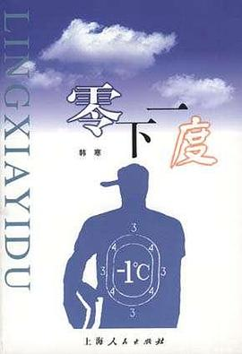

《零下一度》

7.9
★★★★☆
豆瓣评分 · 36,929 人评价
未标记阅读状态
韩寒高中退学前后的早期散文随笔精选，以清冷机敏的文字记录江南小镇风物、寄宿校园日常与少年叛逆心事，见证一代青年偶像的最初锋芒。
总体观点
《零下一度》记录了千禧年之交一位天才少年作家的心智初啼与世界观成型。全书摆脱了中学生应试作文常有的矫情与做作，展现出罕见的语言天分、观察敏锐度与对虚伪成规的天然免疫力。
作品兼具江南水乡的静谧温润与青春荷尔蒙的冷硬叛逆。从松江二中走廊上的斜阳到江南小镇的冬日冷雨，文字间弥漫着一种特有的“零下一度”清醒——既有对平凡美好的深情眷恋，也有对既定成人秩序的不妥协回击。
核心观点
-
1. 少年视角的冷峻与反矫情审美
拒绝成人群体强加的无病呻吟与虚假眼泪，以一种近乎冷眼旁观的幽默姿态记录生活中的滑稽瞬间，葆有青春的原始清白。
《聊天室》中戏谑网络早期的网恋与网名黑话，以冷静笔调戳破虚拟世界里成年男女的情感泡沫。 -
2. 校园生活的荒诞与诗意并存
在封闭压抑的寄宿学校铁律之下，少年们总能找到属于自己的游击战乐趣，在走廊微风与熄灯后的卧谈中安放精神秘密。
《教室》与《校门内外》中描写晚自习窗外的飞蛾、粉笔灰在夕阳里的飞舞，以及与教导主任斗智斗勇的生动群像。 -
3. 江南水乡小镇的风物记忆与乡愁底色
金山亭林镇青石板路、老弄堂里的煤炉烟气与单车铃声，构成了韩寒精神世界的最初发源地与情感锚点。
在《亭林镇的雨》中用细腻白描勾勒梅雨时节河道上的乌篷船与湿漉漉的砖瓦，展现作家难得一见的深情与温润。 -
4. 文体两开花的肉身能量与速度崇拜
长跑特长生的高强度训练造就了对身体肌肉记忆与机械速度的敏锐嗅觉，这种肉身体验直接注入其日后的文字节奏与赛车生涯。
《长跑》中细致刻画在冬日操场上跑到肺部刺痛、双腿麻木时，迎面冷风呼啸灌入喉咙的痛快淋漓之感。 -
5. 拒绝被体制定义的独立人格宣言
面对七门功课红灯与全社会的舆论非议，不自暴自弃亦不低头认错，坚信生命价值绝非由一张考卷打分框定。
《零下一度的独白》中写道：“如果现在这个时代能容纳我不去上大学，那就是这个时代的进步”，掷地有声。
树状思维导图
全书思维导图 · 知识脉络树
已复制思维导图大纲到剪贴板！
全书结构
-
辑一：黑夜漫步
《书店》《头发》《聊天室》《夜半小记》等关于少年夜间游荡、市井琐事与早期网络生活的观察札记。
记录深夜在街头旧书店翻看打折杂志的清冷喜悦，以及对理发店师傅絮叨唠嗑的幽默还原。 -
辑二：校园与长廊
《教室》《校门内外》《同桌》《走廊上的目光》等记录松江二中寄宿生活、考场众生相与师生趣事。
描写期末考试前夕全班同学在走廊上临时抱佛脚背公式，阳光将课桌影子拉得很长的静谧瞬间。 -
辑三：文体两开花
《长跑》《足球》《我的体育生涯》《关于写作这件小事》等记录体育特长生与写作的双轨青春生活。
对比在田径场上流汗冲刺与在台灯下握笔疾书的两种心跳，展现身心极限状态下的纯粹专注。 -
辑四：小城风物
《亭林镇的雨》《老弄堂》《单车少年》《小镇的冬日》等回忆故乡金山亭林镇的草木、河道与人情变迁。
骑着旧自行车穿过小镇湿漉漉的青石板街，车轮溅起水花，街边早点铺蒸笼冒出腾腾白气。 -
辑五：少年心事
《零下一度的独白》《未完成的信》《致未来的自己》等青春迷茫、反叛成规与独立宣言。
在退学决定做出后写给同龄人的告白信，坦陈对未来风雨的未知恐惧，但更坚定了走出自己道路的决绝。